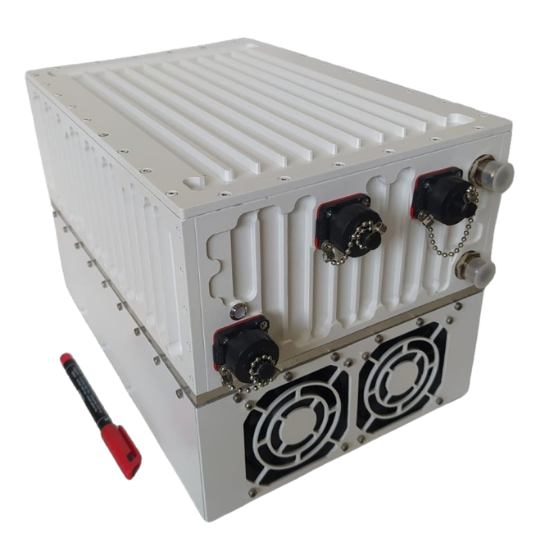
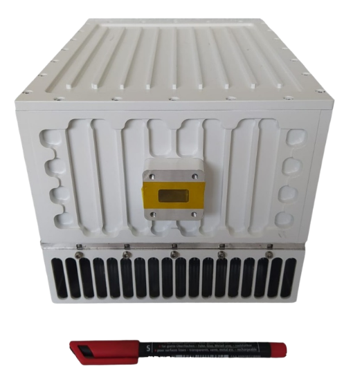
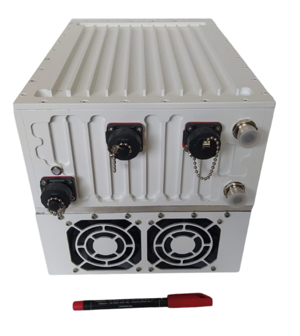

100W L-to-Ku Band Block Up Converter, GaN teknolojisi tabanlıdır. Uydu uplink uygulamalarında en yüksek performansı sunmak üzere tasarlanmıştır.
| RF Frekans | 13.75 – 14.50 GHz |
| Yerel Osilatör | 12.80 GHz |
| Çıkış Gücü | 100W (+50 dBm) |
| IF Konnektör | N-type or F-type |
| Güç Kaynağı (Otomatik Aralıklı) | +15 ~ +60 VDC via IF cable, 500W typ. |
| Çıkış Arayüzü | WR-75 G |
| Kazanç | 65 dB min, 68 dB nominal |
| IMD3 (two tones) | -26 dBc max. 2 signal 5 MHz apart at P-LINEAR |
| L.O. Leakage | -45 dBm max |
| Spurious | -50 dBc max |
| Spektral Büyüme | -30 dBc |
| Dış Referans Gereksinimi | via IF cable — 10 MHz (sine-wave), -5 to +5 dBm @ input port |
| TX Kazanç Varyasyonu / Sıcaklık Kararlılığı | ± 0.5 dB over 40 MHz / ± 1.8 dB over full band / ± 1.5 dB typ., ± 1.8 dB max. |
| Faz Gürültüsü | -55 dBc/Hz @ 10 Hz · -65 @ 100 Hz · -75 @ 1 kHz · -85 @ 10 kHz · -95 @ 100 kHz · -115 @ 1 MHz |
| Gürültü Güç Yoğunluğu TX / RX | -80 dBm/Hz (max) / -125 dBm/Hz (max) |
| Gürültü Figürü | 15 dB max |
| Input / Output V.S.W.R. | 2:1 max |
| Mute | HPA'yı kapatır (L.O. kilitsizse) |
| Çalışma / Depolama Sıcaklığı | -40°C to +55°C / -55°C to +85°C |
| Boyutlar | 330 (L) × 220 (W) × 220 (H) mm — 12.9" × 8.6" × 8.6" |
| Ağırlık | 15 kg (33 lbs) max |